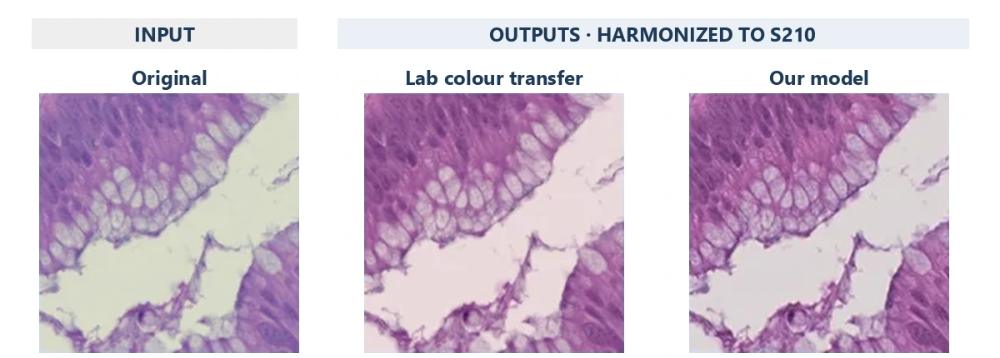
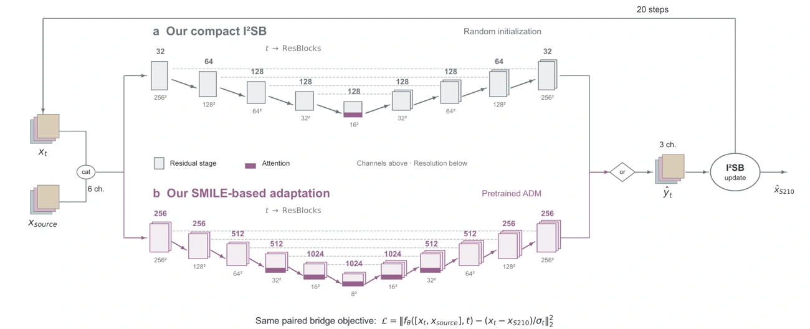

Scanner-Induced Variability and Harmonization
How slide scanners affect digital pathology images, model features, and segmentation.
Image harmonization
I compared Lab colour transfer with learned image translation on corresponding regions from different scanners.
Our model
Our model adapts the SMILE Schrödinger-bridge approach from Yu Shen and colleagues to cross-scanner histology harmonization. The original work used the approach for virtual multiplex staining. Here, the task is to translate a source scanner’s image toward the appearance of the S210 reference. Read the SMILE paper.


Feature harmonization
I also evaluated corrections applied directly to foundation-model embeddings, including statistical alignment and scanner-specific ridge regression.

Conclusion
The comparison shows how acquisition differences appear in both tissue images and model features, and how image-level and feature-level correction address different parts of the problem.